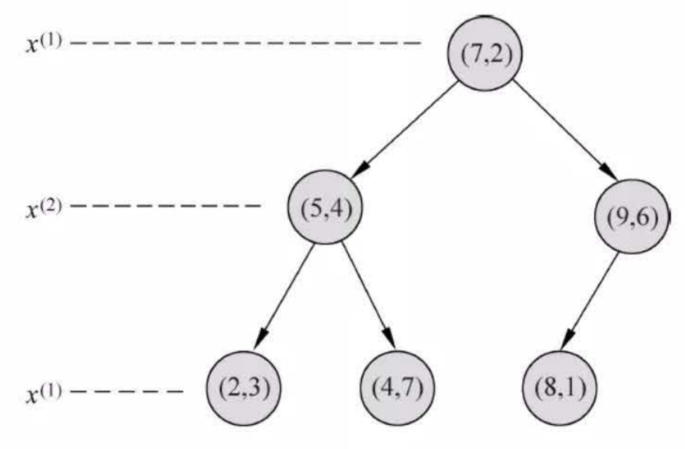

第3章 k近邻法
\(k\) 近邻法是基本且简单的分类与回归方法。\(k\) 近邻法的基本做法是：对给定的训练实例点和输入实例点，首先确定输入实例点的\(k\) 个最近邻训练实例点，然后利用这\(k\) 个训练实例点的类的多数来预测输入实例点的类。
\(k\) 近邻模型对应于基于训练数据集对特征空间的一个划分。\(k\) 近邻法中，当训练集、距离度量、\(k\) 值及分类决策规则确定后，其结果唯一确定。
\(k\) 近邻法三要素：距离度量、\(k\) 值的选择和分类决策规则。常用的距离度量是欧氏距离及更一般的pL 距离。\(k\) 值小时，\(k\) 近邻模型更复杂；\(k\) 值大时，\(k\) 近邻模型更简单。\(k\) 值的选择反映了对近似误差与估计误差之间的权衡，通常由交叉验证选择最优的\(k\) 。
常用的分类决策规则是多数表决，对应于经验风险最小化。
\(k\) 近邻法的实现需要考虑如何快速搜索k个最近邻点。kd树是一种便于对k维空间中的数据进行快速检索的数据结构。kd树是二叉树，表示对\(k\) 维空间的一个划分，其每个结点对应于\(k\) 维空间划分中的一个超矩形区域。利用kd树可以省去对大部分数据点的搜索，
从而减少搜索的计算量。
图1：k近邻法的模型对应特征空间的一个划分
距离度量
设特征空间\(x\) 是\(n\) 维实数向量空间 ，\(x_{i}, x_{j} \in \mathcal{X}\) , \[
x_{i}=\left(x_{i}^{(1)}, x_{i}^{(2)}, \cdots,
x_{i}^{(n)}\right)^{\mathrm{T}}
\]
\[
x_{j}=\left(x_{j}^{(1)}, x_{j}^{(2)}, \cdots,
x_{j}^{(n)}\right)^{\mathrm{T}}
\]
则：\(x_i\) ,\(x_j\) 的\(L_p\) 距离定义为: \[
L_{p}\left(x_{i},
x_{j}\right)=\left(\sum_{i=1}^{n}\left|x_{i}^{(i)}-x_{j}^{(l)}\right|^{p}\right)^{\frac{1}{p}}
\]
\[
L_1\left(x_i, x_j\right)=\sum_{l=1}^n\left|x_i^{(l)}-x_j^{(l)}\right|
\]
\[
L_2\left(x_i,
x_j\right)=\left(\sum_{l=1}^n\left|x_i^{(l)}-x_j^{(l)}\right|^2\right)^{\frac{1}{2}}
\]
\[
L_{\infty}\left(x_i, x_j\right)=\max _l\left|x_i^{(l)}-x_j^{(l)}\right|
\]
import mathfrom itertools import combinations
def L (x, y, p=2 ): if len (x) == len (y) and len (x) > 1 : sum = 0 for i in range (len (x)): sum += math.pow (abs (x[i] - y[i]), p) return math.pow (sum , 1 / p) else : return 0
例：
已知二维空间的 3 个点 \(x_1=(1,1)^{\mathrm{T}}, x_2=(5,1)^{\mathrm{T}},
x_3=(4,4)^{\mathrm{T}}\) , 试求在 \(p\) 取不同值时, \(L_p\) 距离下 \(x_1\) 的最近邻点。
x1 = [1 , 1 ] x2 = [5 , 1 ] x3 = [4 , 4 ]
for i in range (1 , 5 ): r = {'1-{}' .format (c): L(x1, c, p=i) for c in [x2, x3]} print (min (zip (r.values(), r.keys())))
Output[ ]
(4.0, '1-[5, 1]')
(4.0, '1-[5, 1]')
(3.7797631496846193, '1-[4, 4]')
(3.5676213450081633, '1-[4, 4]')python实现，遍历所有数据点，找出\(n\) 个距离最近的点的分类情况，少数服从多数
import numpy as npimport pandas as pdimport matplotlib.pyplot as plt%matplotlib inline from sklearn.datasets import load_irisfrom sklearn.model_selection import train_test_splitfrom collections import Counter
iris = load_iris() df = pd.DataFrame(iris.data, columns=iris.feature_names) df['label' ] = iris.target df.columns = ['sepal length' , 'sepal width' , 'petal length' , 'petal width' , 'label' ]
Output[ ] \[
\begin{aligned}
&\begin{array}{|l|l|l|l|l|l|}
\hline & \text { sepal length } & \text { sepal width } &
\text { petal length } & \text { petal width } & \text { label }
\\
\hline \mathbf{0} & 5.1 & 3.5 & 1.4 & 0.2 & 0 \\
\hline \mathbf{1} & 4.9 & 3.0 & 1.4 & 0.2 & 0 \\
\hline \mathbf{2} & 4.7 & 3.2 & 1.3 & 0.2 & 0 \\
\hline \mathbf{3} & 4.6 & 3.1 & 1.5 & 0.2 & 0 \\
\hline \mathbf{4} & 5.0 & 3.6 & 1.4 & 0.2 & 0 \\
\hline \ldots & \ldots & \ldots & \ldots & \ldots &
\ldots \\
\hline \mathbf{1 4 5} & 6.7 & 3.0 & 5.2 & 2.3 & 2 \\
\hline \mathbf{1 4 6} & 6.3 & 2.5 & 5.0 & 1.9 & 2 \\
\hline \mathbf{1 4 7} & 6.5 & 3.0 & 5.2 & 2.0 & 2 \\
\hline \mathbf{1 4 8} & 6.2 & 3.4 & 5.4 & 2.3 & 2 \\
\hline \mathbf{1 4 9} & 5.9 & 3.0 & 5.1 & 1.8 & 2 \\
\hline
\end{array}\\
&150 \text { rows } \times 5 \text { columns }
\end{aligned}
\]
plt.scatter(df[:50 ]['sepal length' ], df[:50 ]['sepal width' ], label='0' ) plt.scatter(df[50 :100 ]['sepal length' ], df[50 :100 ]['sepal width' ], label='1' ) plt.xlabel('sepal length' ) plt.ylabel('sepal width' ) plt.legend()
Output[ ]
<matplotlib.legend.Legend at 0x223cea49490>
data = np.array(df.iloc[:100 , [0 , 1 , -1 ]]) X, y = data[:,:-1 ], data[:,-1 ] X_train, X_test, y_train, y_test = train_test_split(X, y, test_size=0.2 )
class KNN : def __init__ (self, X_train, y_train, n_neighbors=3 , p=2 ): """ parameter: n_neighbors 临近点个数 parameter: p 距离度量 """ self.n = n_neighbors self.p = p self.X_train = X_train self.y_train = y_train def predict (self, X ): knn_list = [] for i in range (self.n): dist = np.linalg.norm(X - self.X_train[i], ord =self.p) knn_list.append((dist, self.y_train[i])) for i in range (self.n, len (self.X_train)): max_index = knn_list.index(max (knn_list, key=lambda x: x[0 ])) dist = np.linalg.norm(X - self.X_train[i], ord =self.p) if knn_list[max_index][0 ] > dist: knn_list[max_index] = (dist, self.y_train[i]) knn = [k[-1 ] for k in knn_list] count_pairs = Counter(knn) max_count = sorted (count_pairs.items(), key=lambda x: x[1 ])[-1 ][0 ] return max_count def score (self, X_test, y_test ): right_count = 0 n = 10 for X, y in zip (X_test, y_test): label = self.predict(X) if label == y: right_count += 1 return right_count / len (X_test)
clf = KNN(X_train, y_train)
clf.score(X_test, y_test)
Output[ ]
1.0test_point = [6.0 , 3.0 ] print ('Test Point: {}' .format (clf.predict(test_point)))
Output[ ]
Test Point: 1.0plt.scatter(df[:50 ]['sepal length' ], df[:50 ]['sepal width' ], label='0' ) plt.scatter(df[50 :100 ]['sepal length' ], df[50 :100 ]['sepal width' ], label='1' ) plt.plot(test_point[0 ], test_point[1 ], 'bo' , label='test_point' ) plt.xlabel('sepal length' ) plt.ylabel('sepal width' ) plt.legend()
Output[ ]
<matplotlib.legend.Legend at 0x223d67b9490>
scikit-learn实例
from sklearn.neighbors import KNeighborsClassifierclf_sk = KNeighborsClassifier() clf_sk.fit(X_train, y_train) clf_sk.score(X_test, y_test)
Output[ ]
1.0sklearn.neighbors.KNeighborsClassifier
n_neighbors: 临近点个数p: 距离度量algorithm:
近邻算法，可选{'auto', 'ball_tree', 'kd_tree', 'brute'}weights: 确定近邻的权重
kd树
kd 树是一种对k维空间中的实例点进行存储以便对其进行快速检索的树形数据结构。
kd 树是二叉树，表示对\(k\) 维空间的一个划分（partition）。构造kd 树相当于不断地用垂直于坐标轴的超平面将\(k\) 维空间切分，构成一系列的k维超矩形区域。kd树的每个结点对应于一个\(k\) 维超矩形区域。
构造kd 树的方法如下：
构造根结点，使根结点对应于\(k\) 维空间中包含所有实例点的超矩形区域；通过下面的递归方法，不断地对\(k\) 维空间进行切分，生成子结点。在超矩形区域（结点）上选择一个坐标轴和在此坐标轴上的一个切分点，确定一个超平面，这个超平面通过选定的切分点并垂直于选定的坐标轴，将当前超矩形区域切分为左右两个子区域（子结点）；这时，实例被分到两个子区域。这个过程直到子区域内没有实例时终止（终止时的结点为叶结点）。在此过程中，将实例保存在相应的结点上。
通常，依次选择坐标轴对空间切分，选择训练实例点在选定坐标轴上的中位数（median）为切分点，这样得到的kd 树是平衡的。注意，平衡的kd 树搜索时的效率未必是最优的。
构造平衡kd树算法
输入：\(k\) 维空间数据集\(T＝\{x_1，x_2,…,x_N\}\) ，
其中：\(x_{i}=\left(x_{i}^{(1)},
x_{i}^{(2)}, \cdots, x_{i}^{(k)}\right)^{\mathrm{T}}\) ，\(i＝1,2,…,N\) ；
输出：kd 树。
（1）开始：构造根结点，根结点对应于包含\(T\) 的\(k\) 维空间的超矩形区域。
选择\(x^{(1)}\) 为坐标轴，以T中所有实例的\(x^{(1)}\) 坐标的中位数为切分点，将根结点对应的超矩形区域切分为两个子区域。切分由通过切分点并与坐标轴\(x^{(1)}\) 垂直的超平面实现。
由根结点生成深度为1的左、右子结点：左子结点对应坐标\(x^{(1)}\) 小于切分点的子区域，
右子结点对应于坐标\(x^{(1)}\) 大于切分点的子区域。
将落在切分超平面上的实例点保存在根结点。
（2）重复：对深度为\(j\) 的结点，选择\(x^{(1)}\) 为切分的坐标轴，\(l＝j(modk)+1\) ，以该结点的区域中所有实例的\(x^{(1)}\) 坐标的中位数为切分点，将该结点对应的超矩形区域切分为两个子区域。切分由通过切分点并与坐标轴\(x^{(1)}\) 垂直的超平面实现。
由该结点生成深度为\(j+1\) 的左、右子结点：左子结点对应坐标\(x^{(1)}\) 小于切分点的子区域，右子结点对应坐标\(x^{(1)}\) 大于切分点的子区域。
将落在切分超平面上的实例点保存在该结点。
（3）直到两个子区域没有实例存在时停止。从而形成kd 树的区域划分。
class KdNode (object ): def __init__ (self, dom_elt, split, left, right ): self.dom_elt = dom_elt self.split = split self.left = left self.right = right class KdTree (object ): def __init__ (self, data ): k = len (data[0 ]) def CreateNode (split, data_set ): if not data_set: return None data_set.sort(key=lambda x: x[split]) split_pos = len (data_set) // 2 median = data_set[split_pos] split_next = (split + 1 ) % k return KdNode( median, split, CreateNode(split_next, data_set[:split_pos]), CreateNode(split_next, data_set[split_pos + 1 :])) self.root = CreateNode(0 , data) def preorder (root ): print (root.dom_elt) if root.left: preorder(root.left) if root.right: preorder(root.right)
from math import sqrtfrom collections import namedtupleresult = namedtuple("Result_tuple" , "nearest_point nearest_dist nodes_visited" ) def find_nearest (tree, point ): k = len (point) def travel (kd_node, target, max_dist ): if kd_node is None : return result([0 ] * k, float ("inf" ), 0 ) nodes_visited = 1 s = kd_node.split pivot = kd_node.dom_elt if target[s] <= pivot[s]: nearer_node = kd_node.left further_node = kd_node.right else : nearer_node = kd_node.right further_node = kd_node.left temp1 = travel(nearer_node, target, max_dist) nearest = temp1.nearest_point dist = temp1.nearest_dist nodes_visited += temp1.nodes_visited if dist < max_dist: max_dist = dist temp_dist = abs (pivot[s] - target[s]) if max_dist < temp_dist: return result(nearest, dist, nodes_visited) temp_dist = sqrt(sum ((p1 - p2)**2 for p1, p2 in zip (pivot, target))) if temp_dist < dist: nearest = pivot dist = temp_dist max_dist = dist temp2 = travel(further_node, target, max_dist) nodes_visited += temp2.nodes_visited if temp2.nearest_dist < dist: nearest = temp2.nearest_point dist = temp2.nearest_dist return result(nearest, dist, nodes_visited) return travel(tree.root, point, float ("inf" ))
例：
给定一个二维空间的数据集 \[
T=\left\{(2,3)^{\mathrm{T}},(5,4)^{\mathrm{T}},(9,6)^{\mathrm{T}},(4,7)^{\mathrm{T}},(8,1)^{\mathrm{T}},(7,2)^{\mathrm{T}}\right\}
\]
构造一个平衡 \(k d\) 树。
data = [[2 ,3 ],[5 ,4 ],[9 ,6 ],[4 ,7 ],[8 ,1 ],[7 ,2 ]] kd = KdTree(data) preorder(kd.root)
Output[ ]
[7, 2]
[5, 4]
[2, 3]
[4, 7]
[9, 6]
[8, 1]from time import perf_counterfrom random import randomdef random_point (k ): return [random() for _ in range (k)] def random_points (k, n ): return [random_point(k) for _ in range (n)]
ret = find_nearest(kd, [3 ,4.5 ]) print (ret)
Output[ ]
Result_tuple(nearest_point=[2, 3], nearest_dist=1.8027756377319946, nodes_visited=4)
特征空间划分

例：kd树
N = 400000 t0 = perf_counter() kd2 = KdTree(random_points(3 , N)) ret2 = find_nearest(kd2, [0.1 ,0.5 ,0.8 ]) t1 = perf_counter() print ("time: " ,t1-t0, "s" )print (ret2)
Output[ ]
time: 4.075719999964349 s
Result_tuple(nearest_point=[0.09993972407411433, 0.4996761242830129, 0.8017383410409034], nearest_dist=0.0017692818435128142, nodes_visited=25)第3章 k近邻法-练习
1
参照下图，在二维空间中给出实例点，画出\(k\) 为1和2时的\(k\) 近邻法构成的空间划分，并对其进行比较，体会\(k\) 值选择与模型复杂度及预测准确率的关系。
解答：
%matplotlib inline import numpy as npfrom sklearn.neighbors import KNeighborsClassifierimport matplotlib.pyplot as pltfrom matplotlib.colors import ListedColormapdata = np.array([[5 , 12 , 1 ], [6 , 21 , 0 ], [14 , 5 , 0 ], [16 , 10 , 0 ], [13 , 19 , 0 ], [13 , 32 , 1 ], [17 , 27 , 1 ], [18 , 24 , 1 ], [20 , 20 , 0 ], [23 , 14 , 1 ], [23 , 25 , 1 ], [23 , 31 , 1 ], [26 , 8 , 0 ], [30 , 17 , 1 ], [30 , 26 , 1 ], [34 , 8 , 0 ], [34 , 19 , 1 ], [37 , 28 , 1 ]]) X_train = data[:, 0 :2 ] y_train = data[:, 2 ] models = (KNeighborsClassifier(n_neighbors=1 , n_jobs=-1 ), KNeighborsClassifier(n_neighbors=2 , n_jobs=-1 )) models = (clf.fit(X_train, y_train) for clf in models)
titles = ('K Neighbors with k=1' , 'K Neighbors with k=2' ) fig = plt.figure(figsize=(15 , 5 )) plt.subplots_adjust(wspace=0.4 , hspace=0.4 ) X0, X1 = X_train[:, 0 ], X_train[:, 1 ] x_min, x_max = X0.min () - 1 , X0.max () + 1 y_min, y_max = X1.min () - 1 , X1.max () + 1 xx, yy = np.meshgrid(np.arange(x_min, x_max, 0.2 ), np.arange(y_min, y_max, 0.2 )) for clf, title, ax in zip (models, titles, fig.subplots(1 , 2 ).flatten()): Z = clf.predict(np.c_[xx.ravel(), yy.ravel()]) Z = Z.reshape(xx.shape) colors = ('red' , 'green' , 'lightgreen' , 'gray' , 'cyan' ) cmap = ListedColormap(colors[:len (np.unique(Z))]) ax.contourf(xx, yy, Z, cmap=cmap, alpha=0.5 ) ax.scatter(X0, X1, c=y_train, s=50 , edgecolors='k' , cmap=cmap, alpha=0.5 ) ax.set_title(title) plt.show()
Output[ ]
2
利用\(T=\left\{(2,3)^{\mathrm{T}},(5,4)^{\mathrm{T}},(9,6)^{\mathrm{T}},(4,7)^{\mathrm{T}},(8,1)^{\mathrm{T}},(7,2)^{\mathrm{T}}\right\}\) 构造的\(kd\) 树求点\(x=(3,4.5)^T\) 的最近邻点。
解答：
import numpy as npfrom sklearn.neighbors import KDTreetrain_data = np.array([(2 , 3 ), (5 , 4 ), (9 , 6 ), (4 , 7 ), (8 , 1 ), (7 , 2 )]) tree = KDTree(train_data, leaf_size=2 ) dist, ind = tree.query(np.array([(3 , 4.5 )]), k=1 ) x1 = train_data[ind[0 ]][0 ][0 ] x2 = train_data[ind[0 ]][0 ][1 ] print ("x点的最近邻点是({0}, {1})" .format (x1, x2))
Output[ ]
x点的最近邻点是(2, 3)3
参照如下算法，写出输出为\(x\) 的\(k\) 近邻的算法。
解答： 算法：用kd树的\(k\) 近邻搜索 \(x\) ；\(x\) 的最近邻
在\(kd\) 树中找出包含目标点\(x\) 的叶结点：从根结点出发，递归地向下访问树。若目标点\(x\) 当前维的坐标小于切分点的坐标，则移动到左子结点，否则移动到右子结点，直到子结点为叶结点为止；
如果“当前\(k\) 近邻点集”元素数量小于\(k\) 或者叶节点距离小于“当前\(k\) 近邻点集”中最远点距离，那么将叶节点插入“当前k近邻点集”；
递归地向上回退，在每个结点进行以下操作：\(k\) 近邻点集”元素数量小于\(k\) 或者当前节点距离小于“当前\(k\) 近邻点集”中最远点距离，那么将该节点插入“当前\(k\) 近邻点集”。\(k\) 近邻点集”中最远点间的距离为半径的超球体相交。如果相交，可能在另一个子结点对应的区域内存在距目标点更近的点，移动到另一个子结点，接着，递归地进行最近邻搜索；如果不相交，向上回退；
当回退到根结点时，搜索结束，最后的“当前\(k\) 近邻点集”即为\(x\) 的最近邻点。
from collections import namedtupleimport numpy as npclass Node (namedtuple("Node" , "location left_child right_child" )): def __repr__ (self ): return str (tuple (self)) class KdTree (): def __init__ (self, k=1 ): self.k = k self.kdtree = None def _fit (self, X, depth=0 ): try : k = self.k except IndexError as e: return None axis = depth % k X = X[X[:, axis].argsort()] median = X.shape[0 ] // 2 try : X[median] except IndexError: return None return Node(location=X[median], left_child=self._fit(X[:median], depth + 1 ), right_child=self._fit(X[median + 1 :], depth + 1 )) def _search (self, point, tree=None , depth=0 , best=None ): if tree is None : return best k = self.k if point[0 ][depth % k] < tree.location[depth % k]: next_branch = tree.left_child else : next_branch = tree.right_child if not next_branch is None : best = next_branch.location return self._search(point, tree=next_branch, depth=depth + 1 , best=best) def fit (self, X ): self.kdtree = self._fit(X) return self.kdtree def predict (self, X ): res = self._search(X, self.kdtree) return res
KNN = KdTree() X_train = np.array([[2 , 3 ], [5 , 4 ], [9 , 6 ], [4 , 7 ], [8 , 1 ], [7 , 2 ]]) KNN.fit(X_train) X_new = np.array([[3 , 4.5 ]]) res = KNN.predict(X_new) x1 = res[0 ] x2 = res[1 ] print ("x点的最近邻点是({0}, {1})" .format (x1, x2))
Output[ ]
x点的最近邻点是(2, 3)